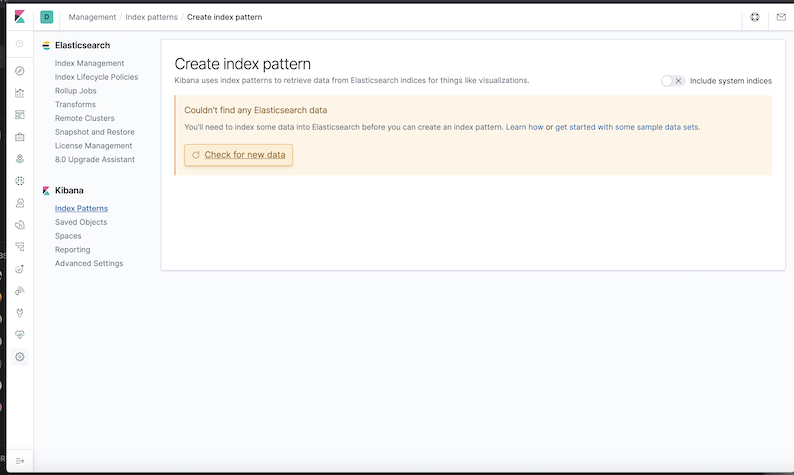
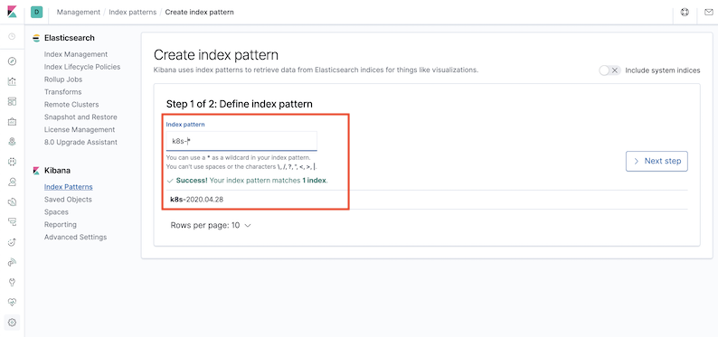
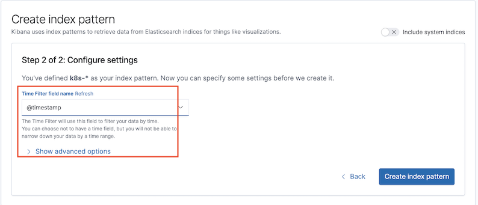
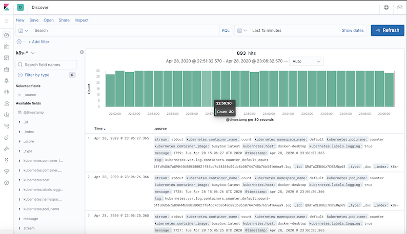
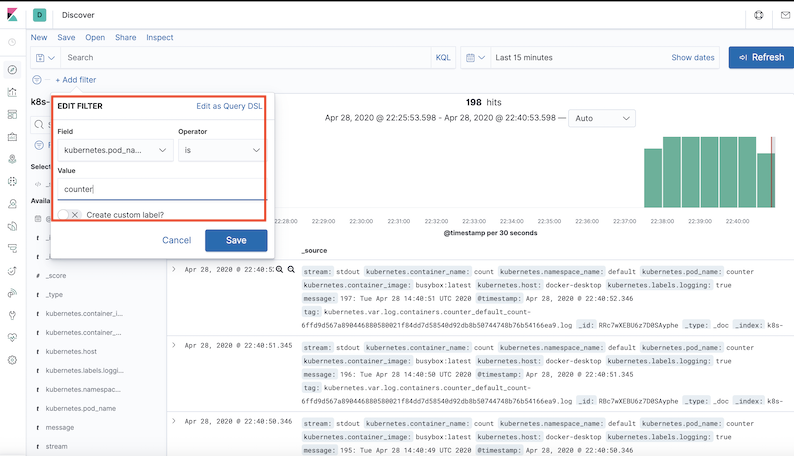

第三节 在 Kubernetes 安装 EFK 日志收集系统[更新]
Install and practice code reference
1、创建 Elasticsearch 集群
elasticsearch-storageclass.yaml
apiVersion: storage.k8s.io/v1
kind: StorageClass
metadata:
name: es-data-db
provisioner: docker.io/hostpath
$ kubectl apply -f elasticsearch-storageclass.yaml
storageclass.storage.k8s.io/es-data-db created
$ kubectl get sc
NAME PROVISIONER AGE
es-data-db docker.io/hostpath 4s
hostpath (default) docker.io/hostpath 49d
kubectl label node docker-desktop es=log
elasticsearch-statefulset.yaml
apiVersion: apps/v1
kind: StatefulSet
metadata:
name: es
namespace: logging
spec:
serviceName: elasticsearch
replicas: 1
selector:
matchLabels:
app: elasticsearch
template:
metadata:
labels:
app: elasticsearch
spec:
nodeSelector:
es: log # apply first
initContainers:
- name: increase-vm-max-map
image: busybox
command: ["sysctl", "-w", "vm.max_map_count=262144"]
securityContext:
privileged: true
- name: increase-fd-ulimit
image: busybox
command: ["sh", "-c", "ulimit -n 65536"]
securityContext:
privileged: true
containers:
- name: elasticsearch
image: docker.elastic.co/elasticsearch/elasticsearch:7.6.2
ports:
- name: rest
containerPort: 9200
- name: inter
containerPort: 9300
resources:
limits:
cpu: 1000m
requests:
cpu: 1000m
volumeMounts:
- name: data
mountPath: /usr/share/elasticsearch/data
env:
- name: cluster.name
value: k8s-logs
- name: node.name
valueFrom:
fieldRef:
fieldPath: metadata.name
- name: cluster.initial_master_nodes
value: "es-0,es-1,es-2" # changed on my cluster
- name: discovery.zen.minimum_master_nodes
value: "2" # changed on my cluster
- name: discovery.seed_hosts
value: "elasticsearch"
- name: ES_JAVA_OPTS
value: "-Xms512m -Xmx512m"
- name: network.host
value: "0.0.0.0"
volumeClaimTemplates:
- metadata:
name: data
labels:
app: elasticsearch
spec:
accessModes: [ "ReadWriteOnce" ]
storageClassName: es-data-db
resources:
requests:
storage: 2Gi
$ kubectl get pod -n logging
NAME READY STATUS RESTARTS AGE
es-0 1/1 Running 0 27m
2、创建 Kibana 服务
$ kubectl create -f kibana.yaml
service/kibana created
deployment.apps/kibana created
$ kubectl get pod -n logging
NAME READY STATUS RESTARTS AGE
es-0 1/1 Running 0 28m
kibana-5c565c47dd-wfgrx 1/1 Running 0 10s
$ kubectl get svc -n logging
NAME TYPE CLUSTER-IP EXTERNAL-IP PORT(S) AGE
elasticsearch ClusterIP None <none> 9200/TCP,9300/TCP 3s
kibana NodePort 10.102.159.162 <none> 5601:31385/TCP 2m55s

3、部署 Fluentd (Updated Config)
3-1 配置
一般来说我们是通过一个配置文件来告诉 Fluentd 如何采集、处理数据的，下面简单和大家介绍下 Fluentd 的配置方法。
日志源配置
比如我们这里为了收集 Kubernetes 节点上的所有容器日志，就需要做如下的日志源配置：
<source>
@id fluentd-containers.log
@type tail # Fluentd 内置的输入方式，其原理是不停地从源文件中获取新的日志。
path /var/log/containers/*.log # 挂载的服务器Docker容器日志地址
pos_file /var/log/es-containers.log.pos
tag raw.kubernetes.* # 设置日志标签
read_from_head true
<parse> # 多行格式化成JSON
@type multi_format # 使用 multi-format-parser 解析器插件
<pattern>
format json # JSON 解析器
time_key time # 指定事件时间的时间字段
time_format %Y-%m-%dT%H:%M:%S.%NZ # 时间格式
</pattern>
<pattern>
format /^(?<time>.+) (?<stream>stdout|stderr) [^ ]* (?<log>.*)$/
time_format %Y-%m-%dT%H:%M:%S.%N%:z
</pattern>
</parse>
</source>
上面配置部分参数说明如下：
id：表示引用该日志源的唯一标识符，该标识可用于进一步过滤和路由结构化日志数据type：Fluentd内置的指令，tail表示Fluentd从上次读取的位置通过tail不断获取数据，另外一个是http表示通过一个GET请求来收集数据。path：tail类型下的特定参数，告诉Fluentd采集/var/log/containers目录下的所有日志，这是docker在Kubernetes节点上用来存储运行容器stdout输出日志数据的目录。pos_file：检查点，如果Fluentd程序重新启动了，它将使用此文件中的位置来恢复日志数据收集。tag：用来将日志源与目标或者过滤器匹配的自定义字符串，Fluentd匹配源/目标标签来路由日志数据。
路由配置
上面是日志源的配置，接下来看看如何将日志数据发送到 Elasticsearch：
<match **>
@id elasticsearch
@type elasticsearch
@log_level info
include_tag_key true
type_name fluentd
host "#{ENV['OUTPUT_HOST']}"
port "#{ENV['OUTPUT_PORT']}"
logstash_format true
<buffer>
@type file
path /var/log/fluentd-buffers/kubernetes.system.buffer
flush_mode interval
retry_type exponential_backoff
flush_thread_count 2
flush_interval 5s
retry_forever
retry_max_interval 30
chunk_limit_size "#{ENV['OUTPUT_BUFFER_CHUNK_LIMIT']}"
queue_limit_length "#{ENV['OUTPUT_BUFFER_QUEUE_LIMIT']}"
overflow_action block
</buffer>
match：标识一个目标标签，后面是一个匹配日志源的正则表达式，我们这里想要捕获所有的日志并将它们发送给Elasticsearch，所以需要配置成**。id：目标的一个唯一标识符。type：支持的输出插件标识符，我们这里要输出到Elasticsearch，所以配置成elasticsearch，这是Fluentd的一个内置插件。log_level：指定要捕获的日志级别，我们这里配置成info，表示任何该级别或者该级别以上（INFO、WARNING、ERROR）的日志都将被路由到Elsasticsearch。host/port：定义Elasticsearch的地址，也可以配置认证信息，我们的Elasticsearch不需要认证，所以这里直接指定 host 和 port 即可。logstash_format：Elasticsearch服务对日志数据构建反向索引进行搜索，将logstash_format设置为true，Fluentd将会以logstash格式来转发结构化的日志数据。Buffer：Fluentd允许在目标不可用时进行缓存，比如，如果网络出现故障或者Elasticsearch不可用的时候。缓冲区配置也有助于降低磁盘的IO。
过滤
由于 Kubernetes 集群中应用太多，也还有很多历史数据，所以我们可以只将某些应用的日志进行收集，比如我们只采集具有 logging=true 这个Label 标签的 Pod 日志，这个时候就需要使用 filter，如下所示：
# 删除无用的属性
<filter kubernetes.**>
@type record_transformer
remove_keys $.docker.container_id,$.kubernetes.container_image_id,$.kubernetes.pod_id,$.kubernetes.namespace_id,$.kubernetes.master_url,$.kubernetes.labels.pod-template-hash
</filter>
# 只保留具有logging=true标签的Pod日志
<filter kubernetes.**>
@id filter_log
@type grep
<regexp>
key $.kubernetes.labels.logging
pattern ^true$
</regexp>
</filter>
3-2 安装
要收集 Kubernetes 集群的日志，直接用 DasemonSet 控制器来部署 Fluentd 应用，这样，它就可以从 Kubernetes 节点上采集日志，确保在集群中的每个节点上始终运行一个 Fluentd 容器。当然可以直接使用 Helm 来进行一键安装，为了能够了解更多实现细节，我们这里还是采用手动方法来进行安装。
首先，我们通过 ConfigMap 对象来指定 Fluentd 配置文件，新建 fluentd-configmap.yaml 文件，文件内容如下：
kind: ConfigMap
apiVersion: v1
metadata:
name: fluentd-config
namespace: logging
data:
system.conf: |-
<system>
root_dir /tmp/fluentd-buffers/
</system>
containers.input.conf: |-
<source>
@id fluentd-containers.log
@type tail # Fluentd 内置的输入方式，其原理是不停地从源文件中获取新的日志。
path /var/log/containers/*.log # 挂载的服务器Docker容器日志地址
pos_file /var/log/es-containers.log.pos
tag raw.kubernetes.* # 设置日志标签
read_from_head true
<parse> # 多行格式化成JSON
@type multi_format # 使用 multi-format-parser 解析器插件
<pattern>
format json # JSON解析器
time_key time # 指定事件时间的时间字段
time_format %Y-%m-%dT%H:%M:%S.%NZ # 时间格式
</pattern>
<pattern>
format /^(?<time>.+) (?<stream>stdout|stderr) [^ ]* (?<log>.*)$/
time_format %Y-%m-%dT%H:%M:%S.%N%:z
</pattern>
</parse>
</source>
# 在日志输出中检测异常，并将其作为一条日志转发
# https://github.com/GoogleCloudPlatform/fluent-plugin-detect-exceptions
<match raw.kubernetes.**> # 匹配tag为raw.kubernetes.**日志信息
@id raw.kubernetes
@type detect_exceptions # 使用detect-exceptions插件处理异常栈信息
remove_tag_prefix raw # 移除 raw 前缀
message log
stream stream
multiline_flush_interval 5
max_bytes 500000
max_lines 1000
</match>
<filter **> # 拼接日志
@id filter_concat
@type concat # Fluentd Filter 插件，用于连接多个事件中分隔的多行日志。
key message
multiline_end_regexp /\n$/ # 以换行符“\n”拼接
separator ""
</filter>
# 添加 Kubernetes metadata 数据
<filter kubernetes.**>
@id filter_kubernetes_metadata
@type kubernetes_metadata
</filter>
# 修复 ES 中的 JSON 字段
# 插件地址：https://github.com/repeatedly/fluent-plugin-multi-format-parser
<filter kubernetes.**>
@id filter_parser
@type parser # multi-format-parser多格式解析器插件
key_name log # 在要解析的记录中指定字段名称。
reserve_data true # 在解析结果中保留原始键值对。
remove_key_name_field true # key_name 解析成功后删除字段。
<parse>
@type multi_format
<pattern>
format json
</pattern>
<pattern>
format none
</pattern>
</parse>
</filter>
# 删除一些多余的属性
<filter kubernetes.**>
@type record_transformer
remove_keys $.docker.container_id,$.kubernetes.container_image_id,$.kubernetes.pod_id,$.kubernetes.namespace_id,$.kubernetes.master_url,$.kubernetes.labels.pod-template-hash
</filter>
# 只保留具有logging=true标签的Pod日志
<filter kubernetes.**>
@id filter_log
@type grep
<regexp>
key $.kubernetes.labels.logging
pattern ^true$
</regexp>
</filter>
###### 监听配置，一般用于日志聚合用 ######
forward.input.conf: |-
# 监听通过TCP发送的消息
<source>
@id forward
@type forward
</source>
output.conf: |-
<match **>
@id elasticsearch
@type elasticsearch
@log_level info
include_tag_key true
host elasticsearch
port 9200
logstash_format true
logstash_prefix k8s # 设置 index 前缀为 k8s
request_timeout 30s
<buffer>
@type file
path /var/log/fluentd-buffers/kubernetes.system.buffer
flush_mode interval
retry_type exponential_backoff
flush_thread_count 2
flush_interval 5s
retry_forever
retry_max_interval 30
chunk_limit_size 2M
queue_limit_length 8
overflow_action block
</buffer>
</match>
上面配置文件中我们只配置了 docker`` 容器日志目录，收集到数据经过处理后发送到 elasticsearch:9200 服务。
然后新建一个 fluentd-daemonset.yaml 的文件，文件内容如下：
$ docker info | grep Root
Docker Root Dir: /var/lib/docker
kubectl label node docker-desktop beta.kubernetes.io/fluentd-ds-ready=true
node/docker-desktop labeled
这个地方非常重要，当然如果你没有更改 docker 根目录则使用默认的/var/lib/docker/containers目录即可。
apiVersion: v1
kind: ServiceAccount
metadata:
name: fluentd-es
namespace: logging
labels:
k8s-app: fluentd-es
kubernetes.io/cluster-service: "true"
addonmanager.kubernetes.io/mode: Reconcile
---
kind: ClusterRole
apiVersion: rbac.authorization.k8s.io/v1
metadata:
name: fluentd-es
labels:
k8s-app: fluentd-es
kubernetes.io/cluster-service: "true"
addonmanager.kubernetes.io/mode: Reconcile
rules:
- apiGroups:
- ""
resources:
- "namespaces"
- "pods"
verbs:
- "get"
- "watch"
- "list"
---
kind: ClusterRoleBinding
apiVersion: rbac.authorization.k8s.io/v1
metadata:
name: fluentd-es
labels:
k8s-app: fluentd-es
kubernetes.io/cluster-service: "true"
addonmanager.kubernetes.io/mode: Reconcile
subjects:
- kind: ServiceAccount
name: fluentd-es
namespace: logging
apiGroup: ""
roleRef:
kind: ClusterRole
name: fluentd-es
apiGroup: ""
---
apiVersion: apps/v1
kind: DaemonSet
metadata:
name: fluentd-es
namespace: logging
labels:
k8s-app: fluentd-es
kubernetes.io/cluster-service: "true"
addonmanager.kubernetes.io/mode: Reconcile
spec:
selector:
matchLabels:
k8s-app: fluentd-es
template:
metadata:
labels:
k8s-app: fluentd-es
kubernetes.io/cluster-service: "true"
# 此注释确保如果节点被驱逐，fluentd不会被驱逐，支持关键的基于 pod 注释的优先级方案。
annotations:
scheduler.alpha.kubernetes.io/critical-pod: ''
spec:
serviceAccountName: fluentd-es
containers:
- name: fluentd-es
image: quay.io/fluentd_elasticsearch/fluentd:v3.0.1
env:
- name: FLUENTD_ARGS
value: --no-supervisor -q
resources:
limits:
memory: 500Mi
requests:
cpu: 100m
memory: 200Mi
volumeMounts:
- name: varlog
mountPath: /var/log
- name: varlibdockercontainers
mountPath: /var/lib/docker/containers
readOnly: true
- name: config-volume
mountPath: /etc/fluent/config.d
nodeSelector:
beta.kubernetes.io/fluentd-ds-ready: "true"
tolerations:
- operator: Exists
terminationGracePeriodSeconds: 30
volumes:
- name: varlog
hostPath:
path: /var/log
- name: varlibdockercontainers
hostPath:
path: /var/lib/docker/containers
- name: config-volume
configMap:
name: fluentd-config
我们将上面创建的 fluentd-config 这个ConfigMap 对象通过 volumes 挂载到了 Fluentd 容器中，另外为了能够灵活控制哪些节点的日志可以被收集，所以我们这里还添加了一个 nodSelector 属性：
nodeSelector:
beta.kubernetes.io/fluentd-ds-ready: "true"
意思就是要想采集节点的日志，那么我们就需要给节点打上上面的标签
分别创建上面的 ConfigMap 对象和 DaemonSet：
$ kubectl apply -f fluentd-configmap.yaml
configmap/fluentd-config created
$ kubectl create -f fluentd-daemonset.yaml
serviceaccount/fluentd-es created
clusterrole.rbac.authorization.k8s.io/fluentd-es created
clusterrolebinding.rbac.authorization.k8s.io/fluentd-es created
daemonset.apps/fluentd-es created
创建完成后，查看对应的 Pods 列表，检查是否部署成功：
$ kubectl get pods -n logging
NAME READY STATUS RESTARTS AGE
es-0 1/1 Running 0 59m
fluentd-es-7cl8n 1/1 Running 0 5m6s
kibana-5c565c47dd-wfgrx 1/1 Running 0 30m
Fluentd 启动成功后，这个时候就可以发送日志到 ES 了，但是我们这里是过滤了只采集具有 logging=true 标签的 Pod 日志，所以现在还没有任何数据会被采集。
下面我们部署一个简单的测试应用， 新建 counter.yaml 文件，文件内容如下：
apiVersion: v1
kind: Pod
metadata:
name: counter
labels:
logging: "true" # 一定要具有该标签才会被采集
spec:
containers:
- name: count
image: busybox
args: [/bin/sh, -c,
'i=0; while true; do echo "$i: $(date)"; i=$((i+1)); sleep 1; done']
该 Pod 只是简单将日志信息打印到 stdout，所以正常来说 Fluentd 会收集到这个日志数据，在 Kibana 中也就可以找到对应的日志数据了，使用 kubectl 工具创建该Pod：
$ kubectl get pods | grep counter
counter 1/1 Running 0 24s
Pod 创建并运行后，回到 Kibana Dashboard 页面，点击左侧最下面的 management 图标，然后点击 Kibana 下面的 Index Patterns开始导入索引数据：

在这里可以配置我们需要的 Elasticsearch 索引，前面 Fluentd 配置文件中我们采集的日志使用的是 logstash 格式，定义了一个 k8s 的前缀，所以这里只需要在文本框中输入k8s-*即可匹配到 Elasticsearch 集群中采集的 Kubernetes 集群日志数据，然后点击下一步，进入以下页面：

在该页面中配置使用哪个字段按时间过滤日志数据，在下拉列表中，选择@timestamp字段，然后点击Create index pattern，创建完成后，点击左侧导航菜单中的Discover，然后就可以看到一些直方图和最近采集到的日志数据了：

现在的数据就是上面 Counter 应用的日志，如果还有其他的应用，我们也可以筛选过滤：

我们也可以通过其他元数据来过滤日志数据，比如您可以单击任何日志条目以查看其他元数据，如容器名称，Kubernetes 节点，命名空间等。